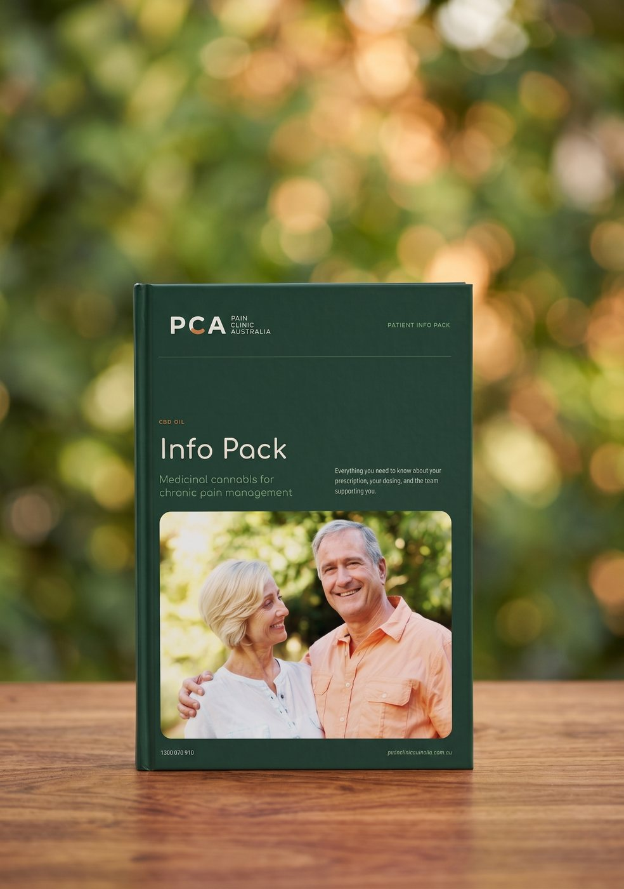

Pain Care that Steps Forward
When Others Have Given Up
Patient-first, comprehensive pain management in Australia.
Pain Expertise that
Goes Beyond a License
Nothing alters your life quite like having your own first-hand experience with severe pain.
When our very own founder had a serious shoulder injury three years ago, he was faced with the reality of standard pain care in Australia. For weeks, he was stuck bedridden unable to work or even do simple daily routines because of debilitating pain.
None of the medications worked and he had to look for alternatives himself. Fortunately, he eventually found an option that worked for him, which has become the bedrock of PCA’s multimodal pain management but… it isn’t just our founder.
Each of our medical professionals is licensed and respected in their own field globally. But more than that, they all have their own stories about chronic pain. What we offer at PCA isn’t just the usual evidence-based medical approach. We’re a premiere clinic because our expertise stems from our own pain.

- Migraine
- Tension Headaches
- Trigeminal Neuralgia
- Postherpetic Neuralgia
- Chronic CRPS
- Multiple Sclerosis
- Degenerative Disc Disease
- Herniated Discs
- Sciatica
- Spinal Stenosis
- Spondylolisthesis
- Arthritis
- Work/Accident Injury
- Adenomyosis
- Endometriosis
- PCOS/PMOS
- Fibromyalgia
- Nociplastic Pain
- Cancer Pain
- Psoriasis Pain
Meeting You Where You’re At
In Your Chronic Pain Journey
Healthcare works best when it’s tailored to the needs and preferences of the patient. For those living with chronic pain? It’s non-negotiable. Chronic pain is often multi-systemic which is why Chronic Pain Australia (CPA) and the International Association for the Study of Pain (IASP) treat multidisciplinary care as the gold-standard for pain management.
To design a custom pain management plan, we will need to carefully examine your chronic pain symptoms with any existing health conditions you may have. Your initial consultation with us, which is 100% free, will often start with a thorough assessment of your medical history. To help streamline the process, we have created a simple quiz.

Using Insurance, WorkCover or CTP
Australians wishing to use private insurance, WorkCover, or CTP to avail of our pain management programme will need to file directly with the relevant insurance providers. Cover has also been arranged through TAC, WCC, NISQ and Blue Scope, subject to the approval of the relevant regulatory body or insurance provider.
Partnered insurance companies


Two minutes, no obligation — the quiz tells us how to bill your care.
The Reality of Chronic Pain
Chronic pain affects millions of Australians, yet many people continue to face delays in diagnosis, ineffective treatments, and reduced quality of life. These figures highlight why personalised, multidisciplinary pain care is more important than ever.
 0+
0+
Individuals guided toward healthier, more balanced lives.
A Multidisciplinary Approach
Get your free Info Pack
Everything you need to know about your prescription, your dosing, and the team supporting you — written by our clinicians.
Take the quiz to get itFinish the two-minute quiz and your Pain Management Coordinator will email your Info Pack, along with a plan built around your answers.


Have Questions? We’re Here to Help
Starting a new pain management journey can feel overwhelming. We’ve answered some of the questions we hear most often to help you feel informed and confident before your first appointment.
Costs vary depending on the specific treatment approaches and medications that will be included in your care, so quotations are given after a tailored plan has been drafted from your free initial assessment. Typically, patients are billed monthly and are often under 6-month or 12-month pain management programmes.
For direct patients or those paying out of pocket, a referral isn’t necessary. As a specialty pain clinic, our Authorised Prescribers are able to access a wide range of treatment modalities for chronic pain. However, if you are availing via insurance, your insurance provider will usually ask for a referral as part of their terms and conditions.
Chronic pain is considered secondary if it’s the result of another condition like in arthritis, spinal cord injuries, and cancer. If the primary cause is successfully treated, pain may go away. However, some conditions don’t have an existing cure, so some Australians develop lifelong pain. Please be informed that we only treat the pain itself and not the underlying condition, so you will still need care from your primary healthcare provider.
It depends on what your condition is. PCA specialises in managing persistent pain, but we don’t directly target the pre-existing conditions that cause pain. Our complementary therapies may improve the underlying disease, but treatment is still essential to preserve your overall health. Some conditions that cause chronic pain are also progressive and early intervention can drastically improve long-term quality of life.
Our medications are not over-the-counter pain relief. Our emerging therapeutics adhere to the guidelines of the Therapeutic Goods Administration (TGA). To be eligible, patients should have already tried first-line medications and are under the mainstream treatment if the pain is triggered by a separate underlying condition. While we’re not under government subsidy, we are partnered with several private insurance companies. Some of our patients have also accessed treatment with approved WorkCover or CTP claims.
Yes, we are partnered with QBE, AAMI, GIO, IAG, EML, i-Care, Allianz, SunCorp, NRMA, Gallagher Bassett, and DXC Technology. Some patients have had their treatment plans covered by TAC, WCC, NISQ, and Blue Scope. We also accept WorkCover and CTP claims (subject to the approval of the relevant regulatory body or insurance provider).
How Fellow Patients Are Doing
Every chronic pain journey is different, but meaningful progress starts with being heard. Discover how our patients have regained confidence, improved their quality of life, and found hope through personalised pain care!
“Absolutely my best Google search result ever! If you suffer osteoarthritis, as I do, then this product is for you. Pain levels dropped… within an hour of taking first dose. Thank you Ira, Dr. Edwards, and the rest of the crew for hearing my woes.”
“I was struggling with C6 nerve pain. Was getting nowhere with my GP so I enquired about PCA and got a quick response. Everyone on the team has been amazing and extremely supportive.”
“I have been suffering chronic tension headaches, back pain, and neck pain. I spoke with PCA consultant Rhea at length, and for the first time in 5 years, I felt I was actually being heard by someone in terms of what I have been going through.”
“After getting the medication, there was a significant difference in my pain level. My sleep pattern and my mental health have improved. I would recommend it to anyone who suffers chronic pain.”
“For 8 years I felt pain day and night. Nothing helped before. My husband had me contact PCA. Ira is fantastic at explaining and understanding. If you have a problem with pain, they will definitely help here.”
Access Educational Resources for Pain
Explore evidence-based articles written by our team covering chronic pain conditions, treatment options, lifestyle advice, and the latest developments in pain management.
 Chronic Pain
Chronic Pain
Chronic Pain: What It Is, Why It Happens & How to Find Relief
Over 3.2 million Australians live with chronic pain. Understanding it is the first step toward getting your life back.
TreatmentPain After Spinal Fusion: What Causes It & How It’s Treated
Many patients feel significant discomfort long after their bones fuse. We look beyond the metal and bone to the source of distress.
ConditionsLiving With Fibromyalgia, MS & Arthritis: A Pain Guide
A practical overview of the most common chronic conditions and the multidisciplinary options that can help.
Read more
Browse every article our clinicians have written on living with chronic pain.